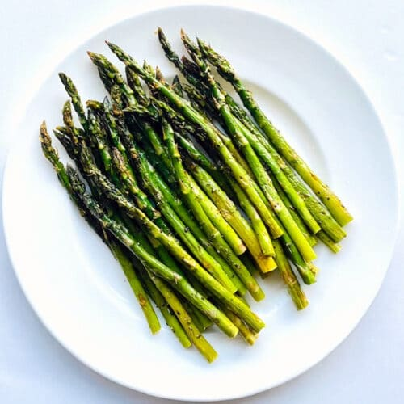

Asparagus

Description
Asparagus is a perennial flower plant, whose shoots are eaten as a garden vegetable. It has been cultivated for over 5000 years. It is delicious. This recipe is for roasted asparagus.
Ingredients
- 1 Bunch of Asparagus
- 1 to 2 Teaspoons Olive Oil
- Salt to Taste
- Fresh Ground Black Pepper to Taste
Steps
- Preheat oven to 400 degrees Farenheit and line a baking sheet with aluminum foil.
- Snap off and discard ends of asparagus.
- Place asparagus on the sheet and drizzle with olive oil.
- Sprinkle with salt and pepper.
- Bake until cooked. (Cooked when ends are soft enough for a fork.)